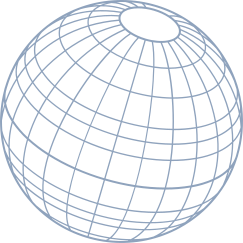
Lab Research & Strategy
Un montón de escombros no son una casa. Un montón de datos no son conocimiento. Fabricamos conocimiento estratégico, modelos de pensamiento y análisis psicosocial. La génesis del conocimiento es la conversación, en todas sus dimensiones y naturalezas.
The Ecosystem
One lab, many rooms

by Dawhole
La Casa de Investigación
La Casa ha asesorado, investigado y orientado procesos estratégicos sociales, políticos y corporativos en América, Europa y Asia Meridional: un puente entre los palacios y las calles. Un pequeño grupo de élite que ha intervenido activamente en más campañas y en más países que cualquier otra oficina de investigación cualitativa en el hemisferio occidental. Más de 100 campañas y más de 15 procesos presidenciales nutren nuestra mirada, cultivada con rigor metodológico, peso intelectual, cuidado y sensibilidad humanas, agudeza estratégica y un profundo respeto por los proyectos de nuestros clientes y los procesos sociales.
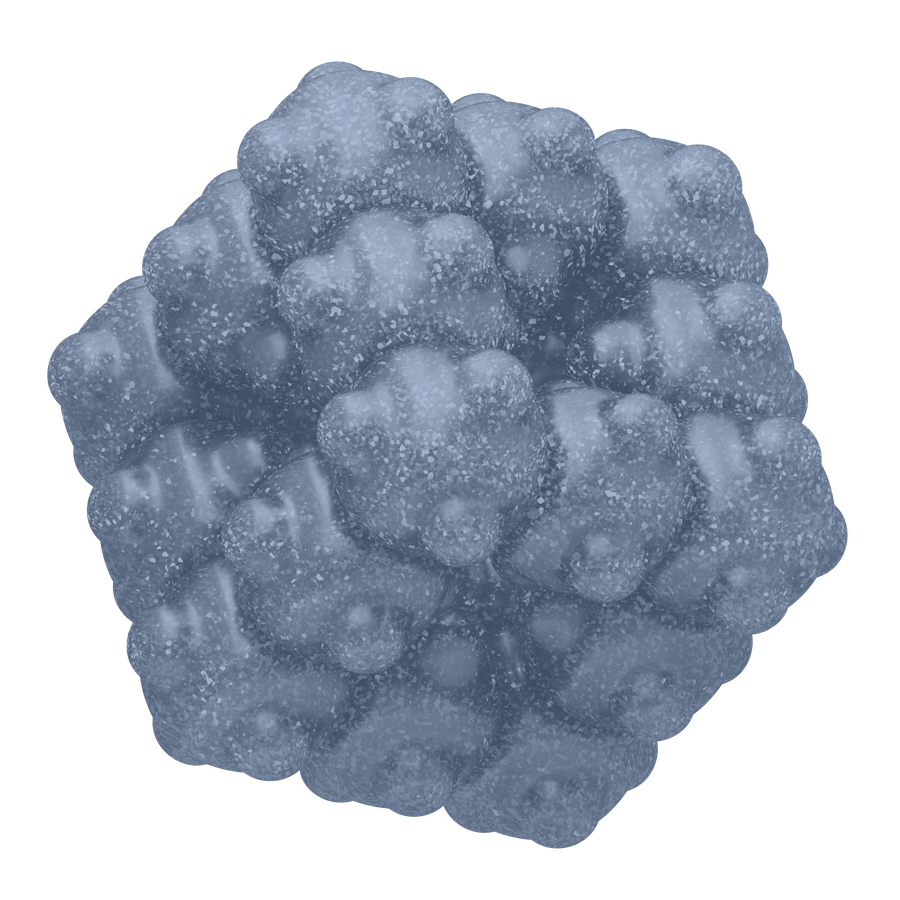
by Dawhole
Locus
Locus nació en 2015, en medio de un gran movimiento hemisférico que demandaba cambios en los hábitos alimenticios y ponía en jaque a gobiernos e industrias. El momento exigía un modelo de segmentación que no cayese en los lugares comunes y una metodología capaz de calibrar y monitorear los procesos sociales, psicosociales, culturales y políticos. Sin planearlo se volvió un motor de análisis que anticipó cambios estructurales en el pensamiento social y dio a luz múltiples algoritmos de altísimo valor estratégico para la adaptación de corporaciones y marcas a los cambios de paradigma, para campañas políticas de alto nivel y para la gestión de relevantes crisis de gobierno. Hoy es un cerebro analítico que propone un necesario cambio en los clusterings políticos y de mercados y pretende, con sincera arrogancia, cambiar un viejo paradigma: que las empresas y los partidos definen cómo se segmenta la sociedad. Locus permite que la sociedad se segmente a sí misma y, de paso, avise con anticipación de sus movimientos.
Learn more →by Dawhole
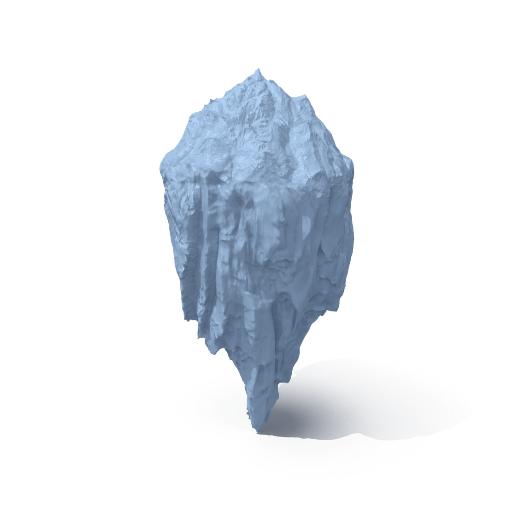
SocialTrauma
La candidez es peligrosa cuando se trata de investigación, estrategia y conocimiento de los sistemas humanos. El dolor, la tragedia, la catástrofe, las amenazas, el miedo, la ansiedad, la angustia, la rabia y el delirio son componentes de la vida social con los que los modelos y oficinas de investigación usualmente no saben qué hacer. Lo sano es no mirar allí: los pactos sociales, políticos y privados se basan casi en su totalidad en una promesa de felicidad y prosperidad. Pero alguien tiene que mirar en la sombra, sin prejuicios, y entender cómo se gestionan las energías colectivas más densas. Creemos, con humildad, que hemos ayudado a gestionar terribles crisis y a que gobiernos y empresas usen su poder y recursos para contribuir a restaurar la salud mental de millones de personas golpeadas diariamente por el mazo de la violencia, la precariedad y la corrupción.
Learn more →
by Dawhole
Ontología de la Alimentación
Hace 11 años se encontraron en México Manuela Loi, que investigaba las nociones de sabor en la cultura huichol del norte de México, y Matías Gálvez, que analizaba el impacto psicosocial y económico de los cambios en los paradigmas alimentario, de salud y enfermedad. La relación entre los principios de salud y enfermedad y las categorías de sabor y color de los alimentos ha sido materia de seria investigación durante más de un siglo en la academia occidental, pero también en los campos investigativos de antiguas culturas y disciplinas científicas pre-europeas como la ayurvédica, la china y la árabe. Hoy es un asunto central en el entendimiento del mercado alimentario y del lugar concreto y simbólico de marcas y empresas de alimentos y bebidas, así como en cualquier análisis de conductas alimentarias.
Learn more →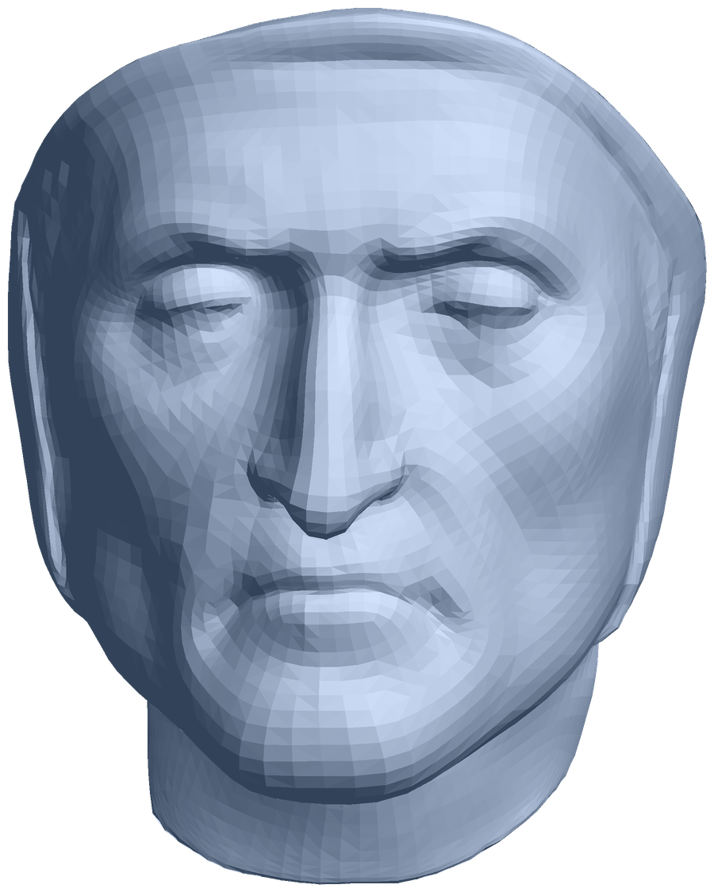
with Human Affairs
Derechos Cognitivos
Nuestro CEO está activamente involucrado en la construcción epistemológica y científica de nuevos campos y fronteras para contemplar la relación entre la tecnología, el poder y la mente humana. Nuestro compromiso con la justicia, la dignidad humana, la libertad y la democracia, parte de un principio fundamental: la mente humana es el eje de la soberanía de los individuos y los pueblos. En un escenario de fascinantes y, muchas veces, prodigiosos avances tecnológicos que de infinidad de formas tocan e intervienen la cognición humana, nos comprometemos activamente con investigación y análisis que faciliten la divulgación y legislación de principios de protección y cuidado de la mente humana, de los procesos cognitivos que dan forma a nuestra experiencia de la vida, especialmente entre niños y adolescentes.
Explore →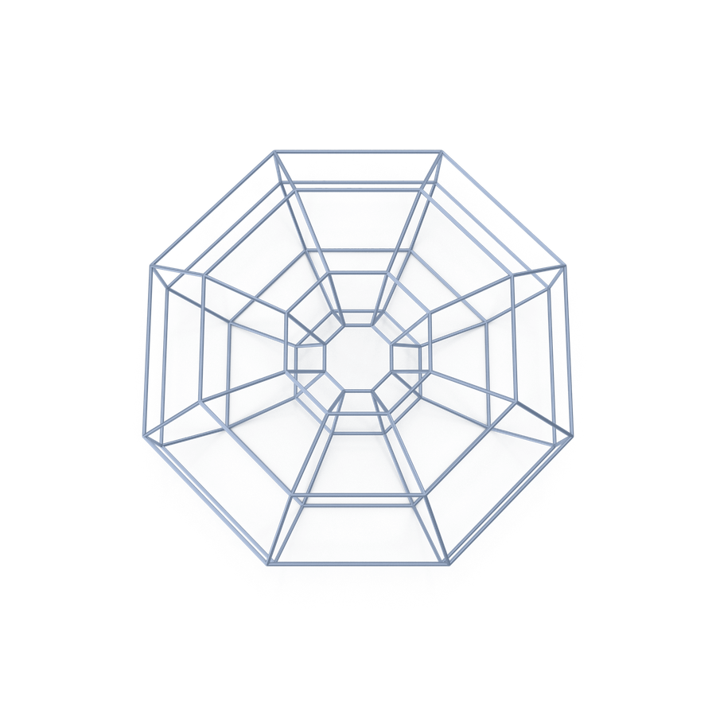
Dawhole
Consultoría & Desarrollo
Dawhole es, además de una plataforma de construcción de conocimiento estratégico y humano, una oficina de consultoría estratégica que ha participado en proyectos de alta relevancia estratégica para las industrias del azúcar, el entretenimiento y las telecomunicaciones.
Learn more →What we do
Strategic research & intelligence
- Brands Strategic Research
- Qualitative Campaigning
- Government Communication
- Corporate Reputation
- Crisis
- Deep Data Analytics
- Complex Strategic Analysis
Human Affairs
Beyond research
Colaboramos con Human Affairs en proyectos que exploran las fronteras entre tecnología, mente y sociedad: el Observatorio de los Derechos Cognitivos y el Laboratorio de los Derechos Cognitivos.
Estudio sindicado
Venezuela Ómnibus
Uno de los desafíos más complejos que afronta Occidente, y el mundo, es la adaptación de los sistemas políticos y económicos a la instauración de sistemas tecnológicos, cognitivos y de comunicación imprevistos por la robusta teoría social, filosófica y política. Venezuela se ha transformado en un territorio arquetípico para Occidente, que encarna múltiples dilemas políticos, sociales, jurídicos y económicos. Por ello creamos el Ómnibus Venezuela: una herramienta de investigación y análisis cuali-cuantitativa y continua en el país, accesible para organismos internacionales, empresas, organizaciones políticas y gobiernos.
Who trusts us
Colaboraciones en proyectos de alto valor estratégico


")

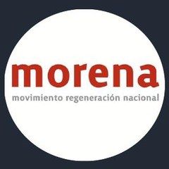


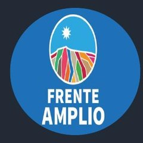

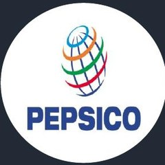


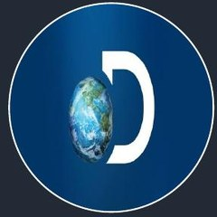
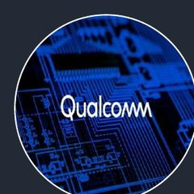
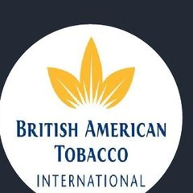

También: Gobierno de España · Gobierno del Ecuador · Gobierno de Venezuela 2026

Napolitan Awards
Best Regional Research, Presidential Campaign — Washington DC, 2021
Best Research, Presidential Campaign — Washington DC, 2022
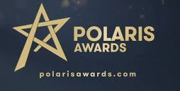
Polaris Awards
Best Research, Opposition Presidential Campaign — London, 2024
2 × Polaris Awards — International recognition for excellence in Political Communication & Public Affairs — London, 2026
Proud member of
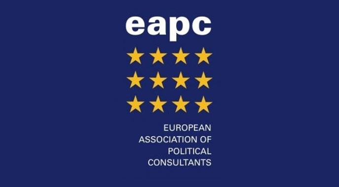
Con el reconocimiento de
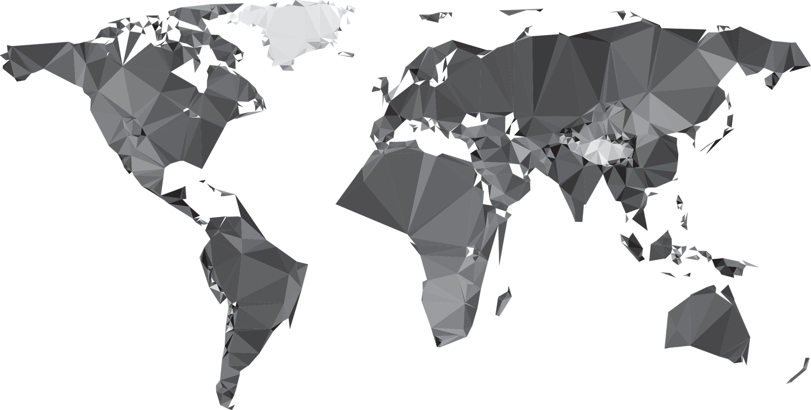
Contact
Let's talk
contacto@dawhole.comArgentina · Brasil · Canadá · Chile · Colombia · Ecuador · España · Estados Unidos · Francia · India · Marruecos · México · Perú · Venezuela